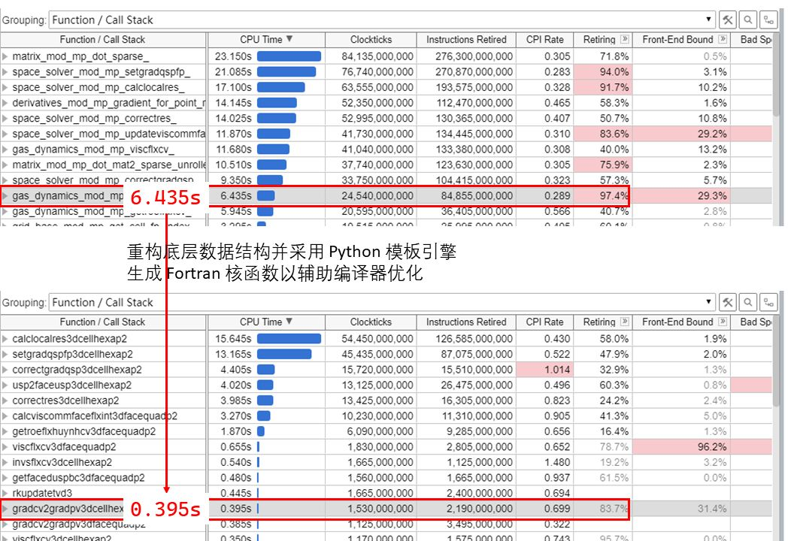
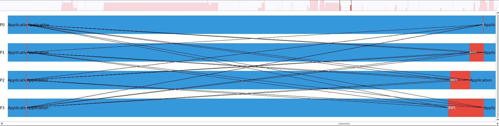
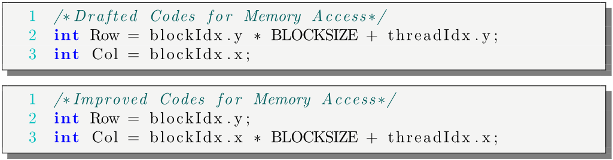
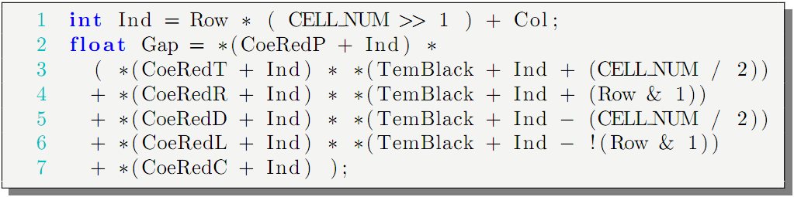
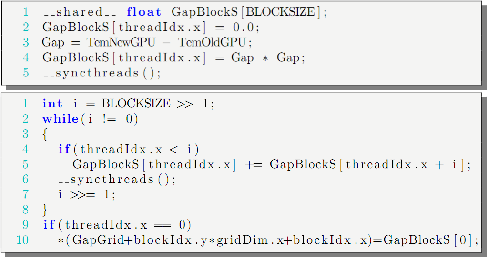

2014年9月 - 2021年12月
直博（动力工程及工程热物理）, 西北工业大学
2016年10月 - 2018年9月
博士联合培养（计算流体力学）, 美国堪萨斯大学
2010年9月 - 2014年6月
学士（飞行器动力工程）, 西北工业大学
自2018年末开始，自主开发了大规模并行 CFD 程序 NFS，基于高阶通量重构方法（Flux Reconstruction）。 NFS 使用 Fortran 2008 语言开发，使用 OOP 方式组织系统架构。 在广州天河 2 号超算上强并行扩展性测试显示 2400 核 CPU 的并行效率 90%。 与计算流体力学著名的开源软件 OpenFOAM 类似，NFS 是一个通用的非结构网格求解器。 区别在于：NFS具备高精度、高性能、高并行扩展性，但缺乏OpenFOAM的多相流、化学反应等物理模型（个人精力所限）。
NFS强并行扩展性
OpenFOAM强并行扩展性
收敛加速技术方面的工作有多重网格。 基准的隐式时间推进方法是Block LU-SGS方法，基本思路是将全隐式方法在全计算域形成的大矩阵A分块，形成的小矩阵Ax = b采用LU分解（此时调用MKL高性能 LU 实现）。 多重网格技术加速收敛，包括 p 型多重网格和 h 型多重网格。
p型多重网格加速20倍
h型多重网格加速4倍
熟悉多种编程语言：C、C++、Fortran、MATLAB、Python。
熟悉高性能并行程序开发：Linux、MPI
日常在 Linux 服务器集群开发并行 CFD 程序，熟悉 Linux 平台管理运行
MPI 为当前大规模并行程序所用的并行编程模型，自主编写的并行 CFD 程序在广州超算2400核强并行扩展性90%，在北京超算使用自主 CFD 程序运行 100 万机时
对 HPC 上 CFD 程序的性能优化有一定经验，编译器辅助优化+MPI并行优化使自主 CFD 程序加速至少3倍并获得良好并行扩展性
针对高阶 CFD 方法特点重构了底层数据结构，大幅强化 SIMD；采用 Python 模板引擎生成 Fortran 核函数以辅助编译器优化，大幅减少了 Instructions Retired

MPI 打包通信数据减少并行通信次数，并采用非阻塞式通信（优化 Load Balancing 限于精力有限留待未来工作）

本科阶段曾写过CUDA平台上有限差分的传热求解器，并探究了多种优化策略（2014年发表中国力学大会会议论文）。
Coalesced Memory Access

Reducing Threads Divergence

Redirecting Data Access to Shared Memory

2014年-2021年
博士一等学业奖学金、二等学业奖学金
2010年-2014年
西北工业大学优秀毕业生，西北工业大学三好学生，西北工业大学一等奖学金，西北工业大学“吴亚军”奖学金，西北工业大学“7081”奖学金
2010年-2014年
全国大学生数学建模竞赛全国二等奖，全国节能减排科技竞赛全国三等奖。
2019年9月-2021年6月
国家数值风洞工程，高阶CPR方法的保动能算法及多重网格技术研究，项目主要实施人。
2017年1月-2020年12月
国家自然科学基金（面上项目），激波/附面层干扰不稳定性的控制机理与规律，项目参与人。
2012年1月-2015年12月
国家自然科学基金（面上项目），热激励器用于高速射流主动控制的机理、方法及规律研究，项目参与人。
完成完全自主知识产权软件 1 项，发表 SCI 期刊及会议文章 7 篇。
[1] J. Shi, H. Yan, Z.J. Wang, Flux reconstruction implementation of an algebraic wall model for large-eddy simulation, AIAA Journal. 58 (2020) 3051–3062. https://doi.org/10.2514/1.j058957.
[2] J. Shi, H. Yan, Z.J. Wang, Towards direct computation of aeroacoustic noise with the high-order FR/CPR method, in: 2018 AIAA/CEAS Aeroacoustics Conference, American Institute of Aeronautics; Astronautics, 2018. https://doi.org/10.2514/6.2018-4095.
[3] J. Shi, H. Yan, Z.J. Wang, An algebraic wall-model for large eddy simulation with the FR/CPR method, in: 2018 AIAA Aerospace Sciences Meeting, American Institute of Aeronautics; Astronautics, 2018. https://doi.org/10.2514/6.2018-2092.
[4] J. Shi, H. Yan, G. Bai, K. Lin, Effect of thermal actuator on vortex characteristics in supersonic shear layer, in: 47th AIAA Fluid Dynamics Conference, American Institute of Aeronautics; Astronautics, 2017. https://doi.org/10.2514/6.2017-4307.
[5] 石京昶, 严红, Effects of thermal actuators on turbulent structures and acoustics of mach 1.3 jet, in: 中国力学大会2015年会议论文集, 中国力学学会, 2015. http://dwz.date/bb4N.
[6] M. Mortazavi, D.D. Knight, O.A. Azarova, J. Shi, H. Yan, Numerical simulation of energy deposition in a supersonic flow past a hemisphere, in: 52nd Aerospace Sciences Meeting, American Institute of Aeronautics; Astronautics, 2014. https://doi.org/10.2514/6.2014-0944.
[7] 石京昶, 严红, CUDA implementation of a laplace solver, in: 中国力学大会2013年会议论文集, 中国力学学会, 2013. http://dwz.date/bb4Q.
课题内容为使用自主开发的大规模并行高阶 FR/CPR 程序 NFS 模拟激波与湍流边界层相互干扰（SWTBLI）的标准算例，研究其中的边界层分离，尤其是分离泡脉动的低频特性，网格量折算成 OpenFOAM 的有限体积法下约 1 亿网格。 研究创新性主要在于：公开文献中研究 SWTBLI 的均采用有限差分类方法，常见的是 WENO 方法。 本研究是国际上公开文献中第一个采用间断有限元类方法，即 FR/CPR 方法研究 SWTBLI 问题的工作，并且结果与参考结果吻合良好。
SWTBLI问题核心区
SWTBLI问题全览
本研究在通量重构算法框架下系统研究了一种新的代数壁面应力模型中各种参数对湍流模拟精度的影响。对壁面建模的大涡模拟可以分为壁面应力模型和LES/RANS混合模型。壁面应力模型的核心在于壁面附近的流动通过壁面应力来代表。因此，壁面附近的流动不再需要精细的网格来解析，从而减轻高雷诺数湍流精确解析所要求的网格量。在壁面应力模型中，壁面应力作为一个壁面模型的模型输出，以某处流场的流场解为模型输入，计算得到。这个特殊的流场位置理论上可以在壁面至壁面律的log层之间的任一位置。但是壁面湍流中相干结构对流场解析度的要求导致这个流场位置与壁面平行方向的网格精度紧密相关。
本研究发表文献：J. Shi, H. Yan, Z.J. Wang, Flux reconstruction implementation of an algebraic wall model for large-eddy simulation, AIAA Journal. 58 (2020) 3051–3062. https://doi.org/10.2514/1.j058957.

本研究采用高阶通量重构方法研究30P30N高升力翼型的噪声。 本研究在粗网格下使用通量重构方法对30P30N高升力翼型进行大涡模拟，与实验结果对比显示，高阶通量重构方法能够高效模拟高升力翼型的近场声场。
本研究发表文献：J. Shi, H. Yan, Z.J. Wang, Towards direct computation of aeroacoustic noise with the high-order FR/CPR method, in: 2018 AIAA/CEAS Aeroacoustics Conference, American Institute of Aeronautics; Astronautics, 2018. https://doi.org/10.2514/6.2018-4095.

本研究模拟了热激励器对圆管射流的控制效果。 通过在圆管末尾壁面加装热激励器来扰动边界层，本研究探究了不同热激励器激励模态在加强圆管射流掺混上的不同效果。
本研究发表文献：J. Shi, H. Yan, G. Bai, K. Lin, Effect of thermal actuator on vortex characteristics in supersonic shear layer, in: 47th AIAA Fluid Dynamics Conference, American Institute of Aeronautics; Astronautics, 2017. https://doi.org/10.2514/6.2017-4307.